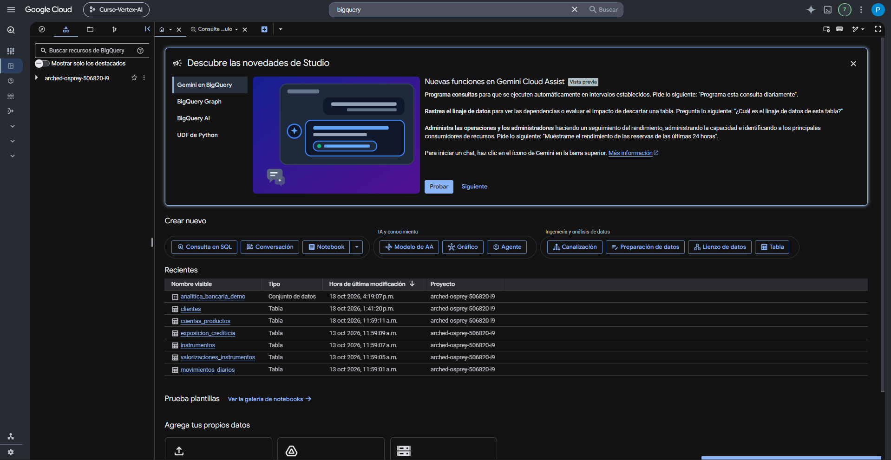
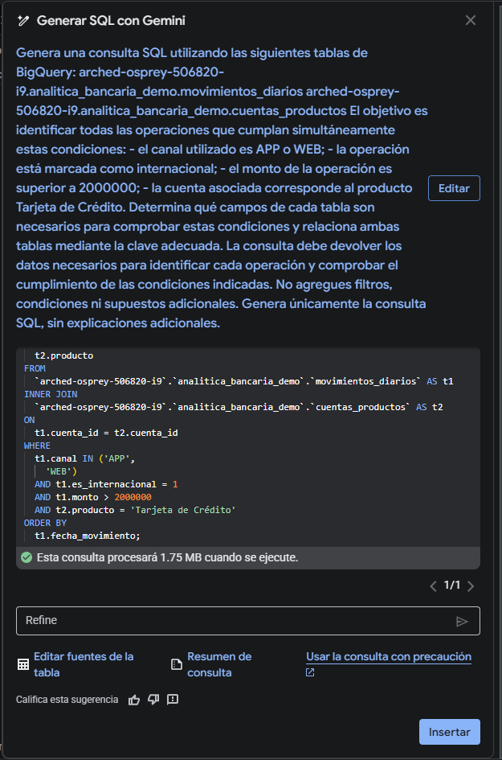

Gemini en BigQuery
BigQuery Studio puede utilizar Gemini para generar SQL a partir de instrucciones en lenguaje natural. La salida es una propuesta de código: debe revisarse antes de ejecutarse y nunca sustituye la comprensión del esquema, las llaves ni el criterio de negocio.
1. ¿Qué puede hacer Gemini en BigQuery?
La asistencia de Gemini en BigQuery puede generar consultas SQL, explicar consultas existentes, completar código y sugerir correcciones. En esta sección nos concentraremos únicamente en la generación de SQL.

2. Generar SQL desde lenguaje natural
El flujo general documentado por Google es:
- Abre BigQuery Studio.
- Abre el editor de consultas.
- Abre la herramienta de generación de SQL con Gemini.
- Escribe una instrucción que describa la consulta deseada.
- Cuando sea necesario, especifica explícitamente las tablas que deben utilizarse.
- Selecciona Generate.
- Revisa el SQL producido antes de insertarlo o ejecutarlo.
3. ¿De dónde obtiene contexto?
La herramienta puede utilizar información de tablas vistas o consultadas recientemente y también permite especificar manualmente las tablas fuente. Por eso dos conversaciones aparentemente iguales pueden producir consultas distintas si el contexto de BigQuery no es el mismo.
Contexto implícito
Tablas que la interfaz tiene recientemente en contexto.
Contexto explícito
Tablas, columnas y condiciones escritas directamente en el prompt.
4. La consulta generada debe revisarse
Google advierte que la IA generativa puede producir resultados plausibles pero incorrectos. Antes de ejecutar, revisa al menos:
| Control | Pregunta |
|---|---|
| Tablas | ¿Usa exactamente las fuentes solicitadas? |
| Columnas | ¿Los nombres existen en el esquema? |
| JOIN | ¿La llave y la dirección de la relación son correctas? |
| Filtros | ¿Cada condición del criterio aparece sin alteraciones? |
| Operadores | ¿Usa >, >=, IN, etc. de acuerdo con el criterio? |
| Grano | ¿Una fila del resultado sigue representando lo que necesitamos? |
| Columnas de salida | ¿Permiten comparar el resultado con la otra consulta? |
| Filtros extra | ¿Agregó condiciones que nunca fueron solicitadas? |

5. Dos consultas pueden ser equivalentes sin ser idénticas
En nuestra prueba previa, Gemini generó una consulta lógicamente equivalente al SQL del agente, pero introdujo diferencias de forma: utilizó INNER JOIN explícito y agregó un ORDER BY. Eso no cambia necesariamente qué filas cumplen el criterio.
Diferencia semántica
Cambia qué registros devuelve o cómo se calculan. Es crítica.
Diferencia de forma
Puede cambiar orden, alias o estilo sin cambiar el conjunto de registros.
6. Verificación independiente de la Prueba Tipo
Después de que el agente genere consulta.sql y resultado.csv, utilizaremos Gemini en BigQuery como una segunda vía para reconstruir la consulta desde cero.
7. Prompt de verificación para la Prueba Tipo
La primera prueba mostró que pedir solo el criterio podía producir el mismo conjunto de filas con columnas distintas. Por eso, para la comparación final especificamos también las columnas de salida.
Genera una consulta GoogleSQL de solo lectura en BigQuery. Utiliza exclusivamente estas dos tablas: - `arched-osprey-506820-i9.analitica_bancaria_demo.movimientos_diarios` - `arched-osprey-506820-i9.analitica_bancaria_demo.cuentas_productos` Relaciona ambas tablas mediante `cuenta_id`. La consulta debe seleccionar exclusivamente las operaciones que cumplan simultáneamente estas cuatro condiciones: 1. `canal` es APP o WEB. 2. `es_internacional` = 1. 3. `monto` > 2000000. 4. `producto` = 'Tarjeta de Crédito'. Devuelve exactamente estas columnas, en este orden: - movimiento_id - cuenta_id - fecha_movimiento - hora - tipo_movimiento - canal - monto - moneda - es_internacional - categoria_contraparte - cliente_id - producto - estado No agregues filtros adicionales. No agregues agregaciones. No agregues GROUP BY. No agregues ORDER BY salvo que sea estrictamente necesario para la lógica, lo que en este caso no debería serlo. Devuelve solamente la consulta SQL.
8. SQL que deberíamos esperar conceptualmente
Gemini puede usar otros alias o escribir INNER JOIN en vez de JOIN. Lo importante es que la lógica sea equivalente a:
SELECT
m.movimiento_id,
m.cuenta_id,
m.fecha_movimiento,
m.hora,
m.tipo_movimiento,
m.canal,
m.monto,
m.moneda,
m.es_internacional,
m.categoria_contraparte,
c.cliente_id,
c.producto,
c.estado
FROM `arched-osprey-506820-i9.analitica_bancaria_demo.movimientos_diarios` AS m
JOIN `arched-osprey-506820-i9.analitica_bancaria_demo.cuentas_productos` AS c
ON m.cuenta_id = c.cuenta_id
WHERE m.canal IN ('APP', 'WEB')
AND m.es_internacional = 1
AND m.monto > 2000000
AND c.producto = 'Tarjeta de Crédito';
9. Cómo comparar contra el resultado del agente
No compares solo “se parece al SQL”. Realiza una comprobación en tres niveles:
- Lógica: mismas tablas, JOIN y cuatro condiciones.
- Esquema de salida: mismas 13 columnas y mismo significado.
- Registros: mismo conjunto de operaciones; en los datos de práctica, 5 filas.

10. Errores frecuentes
| Problema | Qué revisar |
|---|---|
| Gemini usa otra tabla. | Especifica nombres completos y edita las fuentes del generador. |
| Falta una condición. | Revisa el WHERE antes de ejecutar. |
| Usa >= 2000000. | El criterio exige estrictamente > 2000000. |
| Agrega otro canal. | Debe limitarse a APP o WEB. |
| Devuelve solo un conteo. | La verificación principal debe conservar el detalle de las operaciones. |
| Omite cliente_id o estado. | Usa el prompt de verificación que fija las 13 columnas. |
| Agrega ORDER BY. | No es necesariamente incorrecto, pero no es necesario para seleccionar los casos. |
| El resultado no tiene 5 filas. | Revisa tablas, JOIN, operadores y valores exactos antes de concluir que el agente está mal. |
La documentación oficial confirma la herramienta de generación de SQL, el uso de tablas recientemente vistas o seleccionadas manualmente, la necesidad de revisar el SQL generado y la posibilidad de insertar/refinar la consulta. Los detalles de la Prueba Tipo —tablas, criterio, columnas y resultado de referencia— corresponden al entorno didáctico validado del curso.